Full Film Player
Mỗi clip kiểm tra hiển thị 1 giây trước và 1 giây sau điểm nối có kèm voice, để đánh giá độ giật hình, lệch tiếng và nhịp nối cảnh:
Seam 01: S01 → S02 PASS
Mốc nối: Frame 181 (6.033s) | Dải: [151, 211]
Voice S01 kết thúc: "...điểm tựa lâu dài." → S02: "Trước nhiều phụ huynh sẵn sàng..."
Đánh giá: Cắt sạch giữa chuyển đổi sách thành điểm tựa sang bài toán học phí. Mascot và nền chuyển đổi dứt khoát.
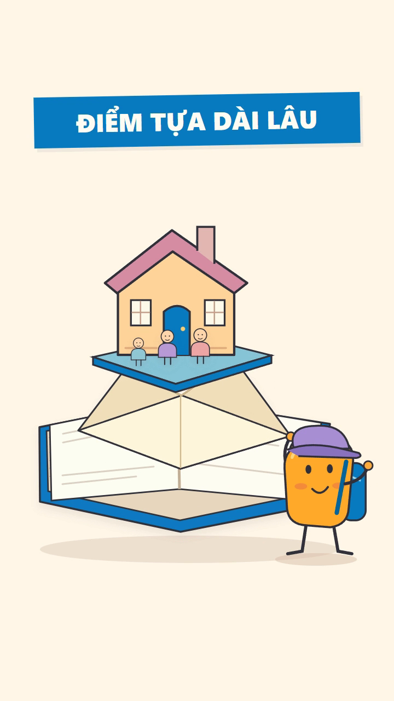
Seam 02: S02 → S03 PASS
Mốc nối: Frame 296 (9.867s) | Dải: [266, 326]
Voice S02: "...hành trình du học của con," → S03: "nhưng nếu con có kế hoạch..."
Đánh giá: Nhịp liên từ "nhưng nếu" tiếp nối tự nhiên từ số tiền học phí sang lộ trình sự nghiệp dài hạn.
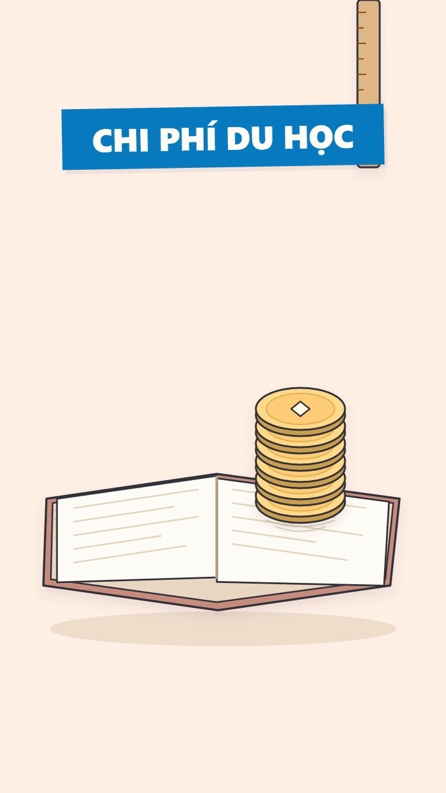
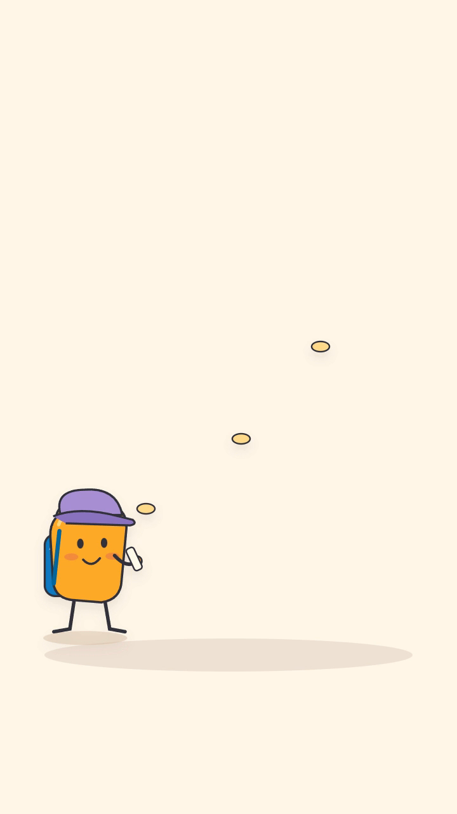
Seam 03: S03 → S04 PASS
Mốc nối: Frame 424 (14.133s) | Dải: [394, 454]
Voice S03: "...tại Châu Âu trong nhiều năm," → S04: "Liệu toàn bộ tài sản của gia đình..."
Đánh giá: Khoảng nghỉ thở tự nhiên mở ra câu hỏi lớn về phân bổ tài sản. Mascot và câu hỏi xuất hiện đúng phách.
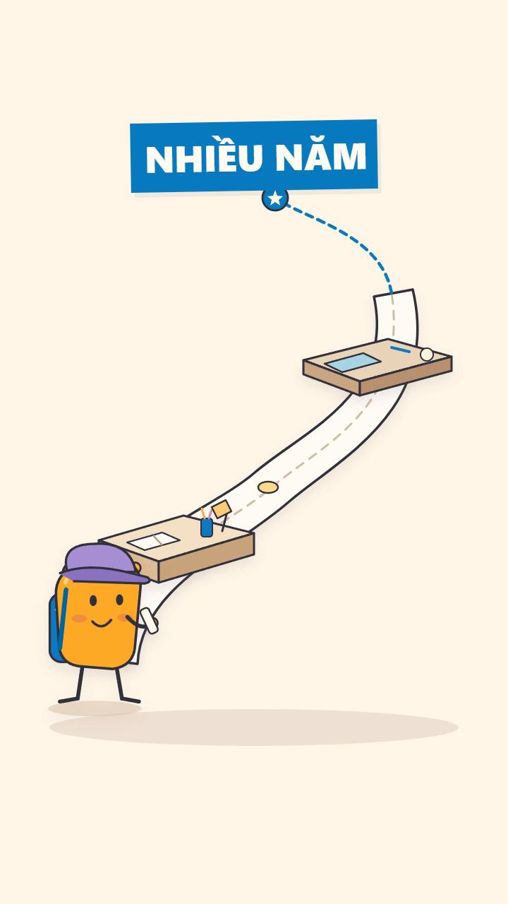
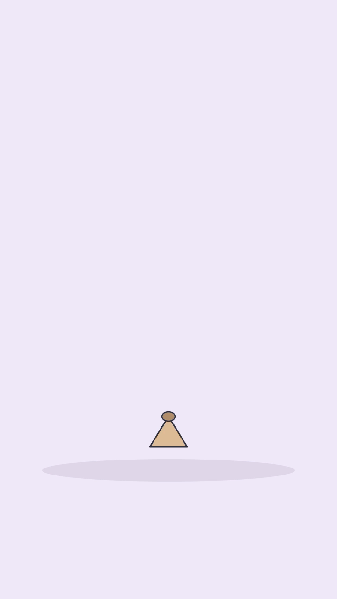
Seam 04: S04 → S05 PASS
Mốc nối: Frame 545 (18.167s) | Dải: [515, 575]
Voice S04: "...chỉ tập trung ở Việt Nam?" → S05: "Đó là lý do ngày càng nhiều gia đình..."
Đánh giá: Chuyển mượt từ câu hỏi sang zoom bản đồ Malta 0.8s, đặt ghim chuẩn xác, đúng nhãn MALTA.

Seam 05: S05 → S06 PASS
Mốc nối: Frame 716 (23.867s) | Dải: [686, 746]
Voice S05: "...bất động sản tại Malta." → S06: "Không chỉ là sở hữu một tài sản..."
Đánh giá: Từ thẻ ảnh bất động sản Malta chuyển sang không gian bàn gia đình ấm cúng, liền mạch.

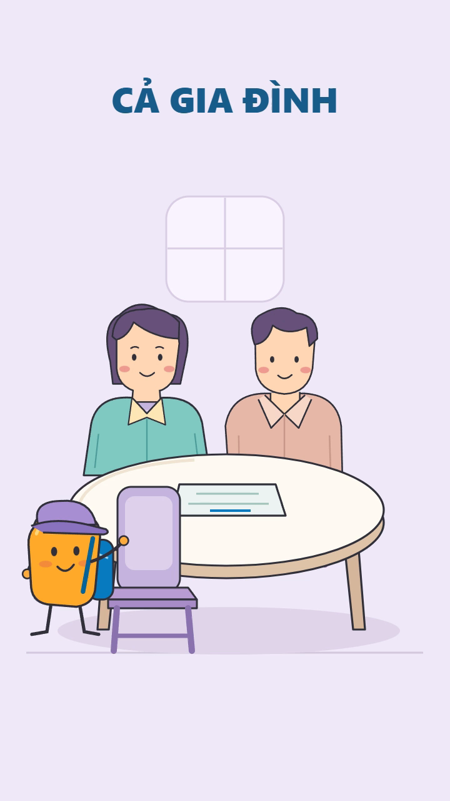
Seam 06: S06 → S07 PASS
Mốc nối: Frame 890 (29.667s) | Dải: [860, 920]
Voice S06: "...cho cả gia đình." → S07: "Khi có một tài sản tại Malta, gia đình có thêm..."
Đánh giá: S07 sửa tay nhân vật cầm thẻ nối Châu Âu, anatomy chuẩn xác, không bị lìa tay.
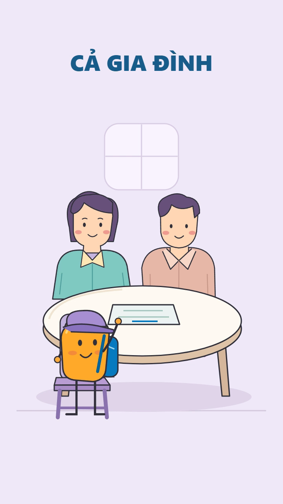
Seam 07: S07 → S08 PASS
Mốc nối: Frame 1030 (34.333s) | Dải: [1000, 1060]
Voice S07: "...điểm kết nối với Châu Âu," → S08: "thuận tiện hơn cho những chuyến thăm con..."
Đánh giá: Nhân vật phụ kéo vali tỉ lệ cân đối, icon chuyến bay nổi bật, mascot giữ nguyên độ cao hợp lý.

Seam 08: S08 → S09 PASS
Mốc nối: Frame 1194 (39.800s) | Dải: [1164, 1224]
Voice S08: "...trong tương lai." → S09: "Đồng thời, việc sở hữu tài sản ở nhiều thị trường..."
Đánh giá: Bản S09 motion-r1 thể hiện cơ chế phân bổ thị trường rõ ràng, không người, chuyển động nhịp nhàng.
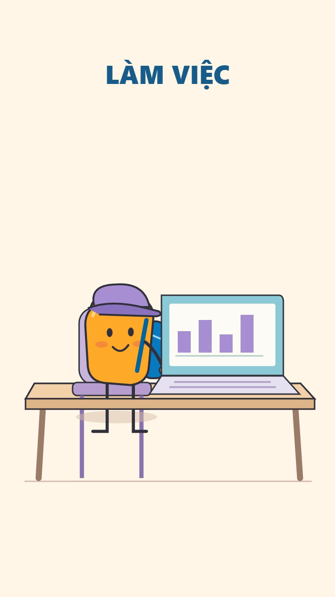

Seam 09: S09 → S10 PASS
Mốc nối: Frame 1418 (47.267s) | Dải: [1388, 1448]
Voice S09: "...hoàn toàn vào một quốc gia." → S10: "Chỉ với khoảng 3,8 tỷ đồng..."
Đánh giá: Số liệu 3,8 tỷ và cấu trúc định cư 4 thế hệ hiển thị sống động, thay thế bố cục tĩnh cũ.
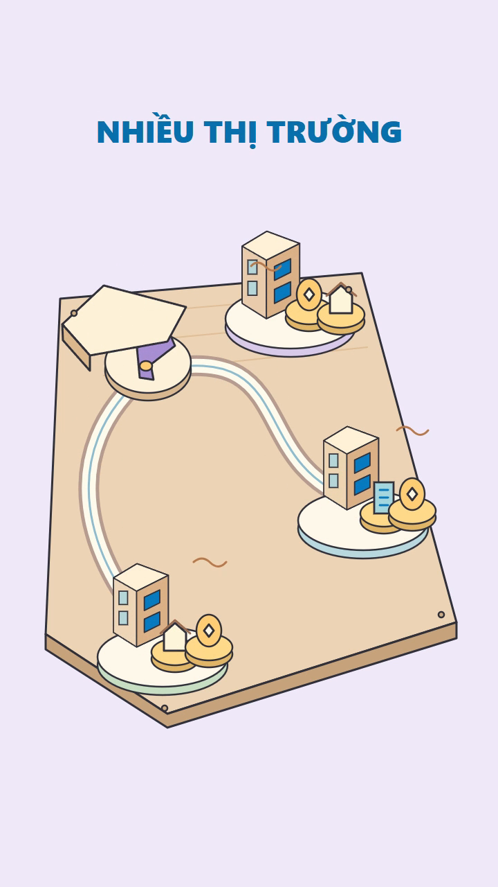

Seam 10: S10 → S11 PASS
Mốc nối: Frame 1602 (53.400s) | Dải: [1572, 1632]
Voice S10: "...cho 4 thế hệ." → S11: "Đây không chỉ là quyết định đầu tư..."
Đánh giá: S11 đã loại bỏ lỗi lộn xộn/rác hình, truyền tải trọn vẹn thông điệp đầu tư vào tương lai của con.
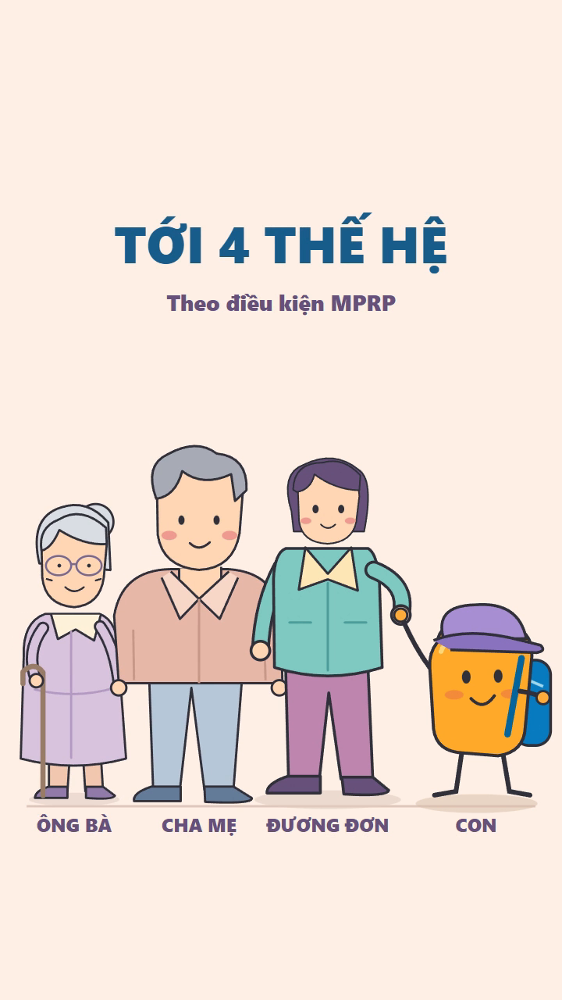

Seam 11: S11 → S12 PASS
Mốc nối: Frame 1807 (60.233s) | Dải: [1777, 1837]
Voice S11: "...cho tương lai của con cái" → S12: "và những cơ hội mà các thế hệ sau..."
Đánh giá: S12 tái cấu trúc rõ ràng hành động mở ra cơ hội Châu Âu thay vì mập mờ như bản cũ.

Seam 12: S12 → S13 PASS
Mốc nối: Frame 1913 (63.767s) | Dải: [1883, 1943]
Voice S12: "...nắm bắt tại Châu Âu." → S13: "Khi con đã bước ra thế giới..."
Đánh giá: Camera mở khung đẹp mắt, con bước đi song hành cùng tài sản gia đình vươn ra quốc tế.
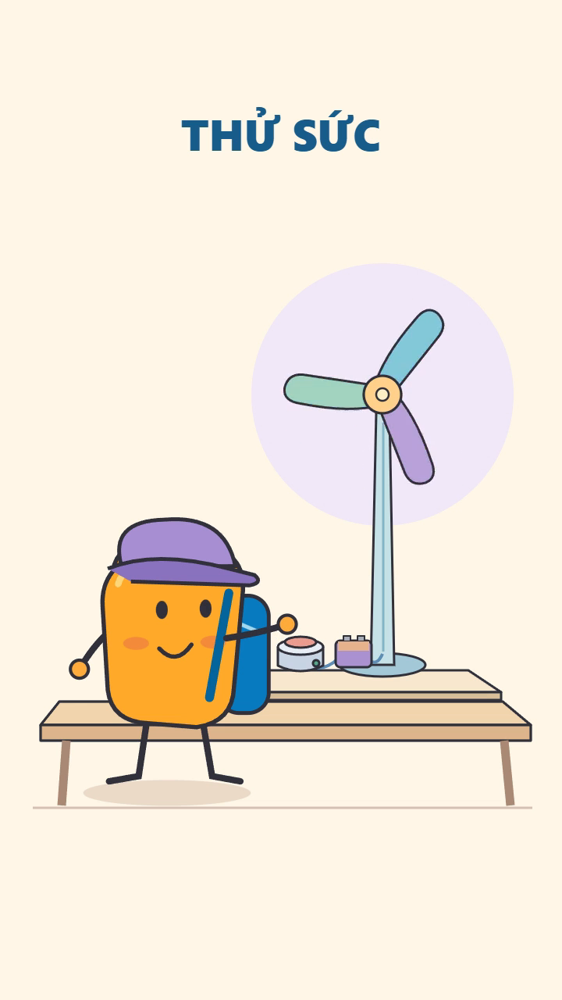

Seam 13: S13 → S14 PASS
Mốc nối: Frame 2049 (68.300s) | Dải: [2019, 2079]
Voice S13: "...bước ra thế giới." → S14: "Bởi đôi khi, điều giá trị nhất không phải là..."
Đánh giá: Chuyển sang kết phim cảm xúc với hình tượng mở cánh cổng cơ hội cho tương lai.
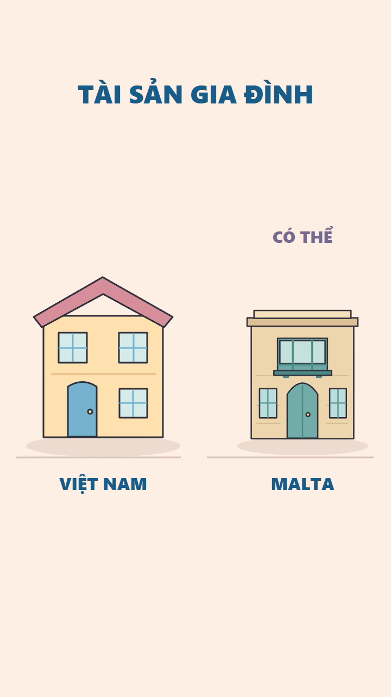

| Scene | Version Locked | Frame Range [Start, End) | Frames | Duration | Voice Narration |
|---|---|---|---|---|---|
| S01 | original_pilot | [0, 181] | 181 | 6.033s | Khi con du học Châu Âu, nhiều gia đình không chỉ đầu tư cho việc học, mà còn đầu tư cho một điểm tựa lâu dài. |
| S02 | Antigravity existing base | [181, 296] | 115 | 3.833s | Trước nhiều phụ huynh sẵn sàng chi hàng tỷ đồng cho hành trình du học của con, |
| S03 | Antigravity existing base | [296, 424] | 128 | 4.267s | nhưng nếu con có kế hoạch học tập và phát triển sự nghiệp tại Châu Âu trong nhiều năm, |
| S04 | Antigravity existing base | [424, 545] | 121 | 4.033s | Liệu toàn bộ tài sản của gia đình có nên chỉ tập trung ở Việt Nam? |
| S05 | S05-zoom-motion-r1 | [545, 716] | 171 | 5.700s | Đó là lý do ngày càng nhiều gia đình lựa chọn đa dạng hóa tài sản bằng bất động sản tại Malta. |
| S06 | S06-S11-motion-r1 | [716, 890] | 174 | 5.800s | Không chỉ là sở hữu một tài sản ở Châu Âu, đây còn là cách xây dựng một nền tảng lâu dài cho cả gia đình. |
| S07 | S07-S08-motion-r1 | [890, 1030] | 140 | 4.667s | Khi có một tài sản tại Malta, gia đình có thêm một điểm kết nối với Châu Âu, |
| S08 | S07-S08-motion-r1 | [1030, 1194] | 164 | 5.467s | thuận tiện hơn cho những chuyến thăm con, cho các kế hoạch học tập, sinh sống, hoặc làm việc trong tương lai. |
| S09 | motion-r1 (pilots-approved-frames-r1) | [1194, 1418] | 224 | 7.467s | Đồng thời, việc sở hữu tài sản ở nhiều thị trường cũng giúp đa dạng hóa danh mục đầu tư thay vì phụ thuộc hoàn toàn vào một quốc gia. |
| S10 | S10-S12-motion-r1 | [1418, 1602] | 184 | 6.133s | Chỉ với khoảng 3,8 tỷ đồng, chương trình Thẻ Xanh Malta mang đến cơ hội định cư cho 4 thế hệ. |
| S11 | S06-S11-motion-r1 | [1602, 1807] | 205 | 6.833s | Đây không chỉ là quyết định đầu tư vào một bất động sản, mà còn là quyết định đầu tư vào sự chuẩn bị cho tương lai của con cái |
| S12 | S10-S12-motion-r1 | [1807, 1913] | 106 | 3.533s | và những cơ hội mà các thế hệ sau có thể nắm bắt tại Châu Âu. |
| S13 | S13-S14-motion-r1 | [1913, 2049] | 136 | 4.533s | Khi con đã bước ra thế giới, tài sản của gia đình cũng có thể bước ra thế giới. |
| S14 | S13-S14-motion-r1 | [2049, 2255] | 206 | 6.867s | Bởi đôi khi, điều giá trị nhất không phải là sở hữu thêm một căn nhà, mà là sở hữu thêm một lựa chọn cho tương lai. |
Mỗi cảnh được kiểm chứng qua 3 mốc: Mở (Start), Giữa (Mid), và Cuối (End) ở cả định dạng Màu và Grayscale (để kiểm tra độ tương phản / dark mass).
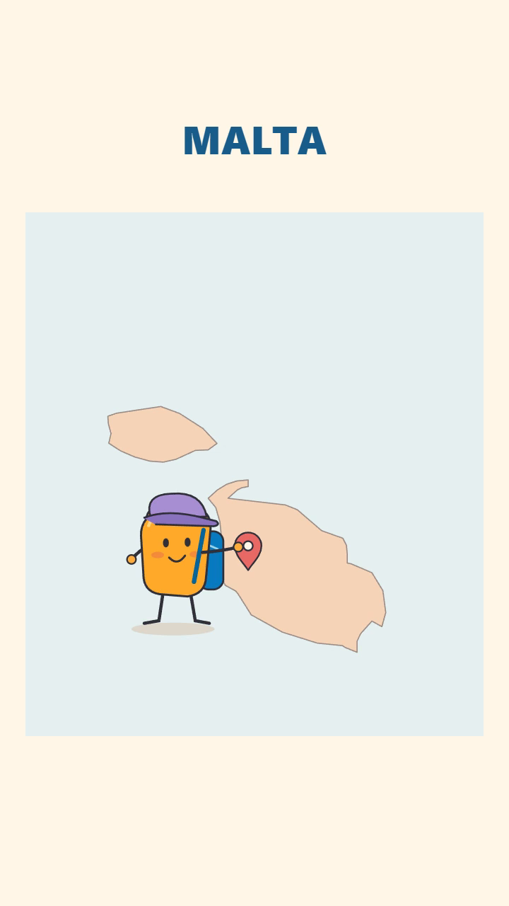
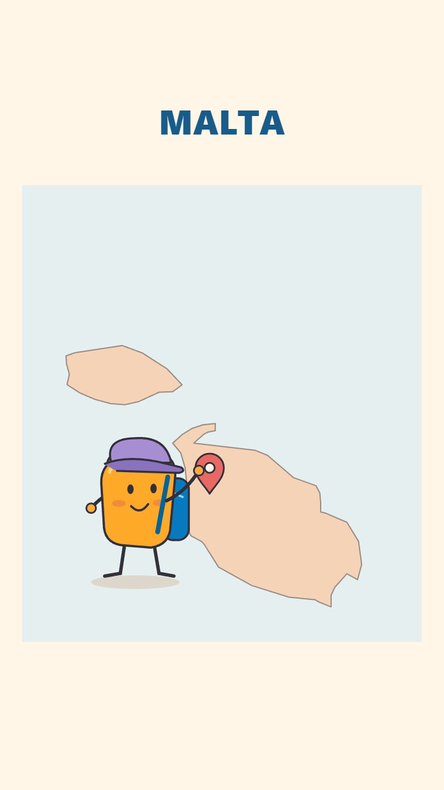
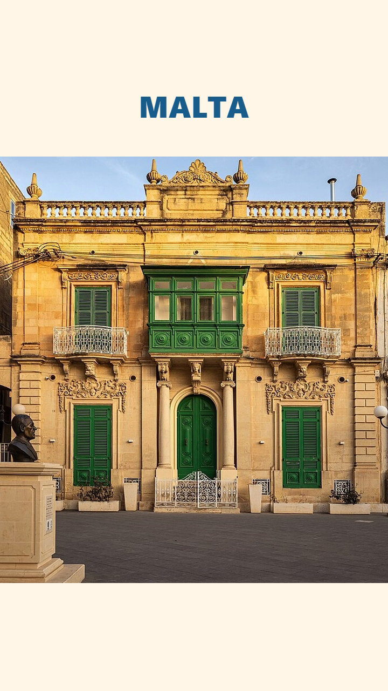
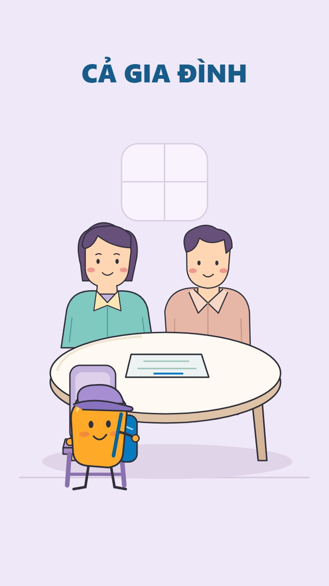
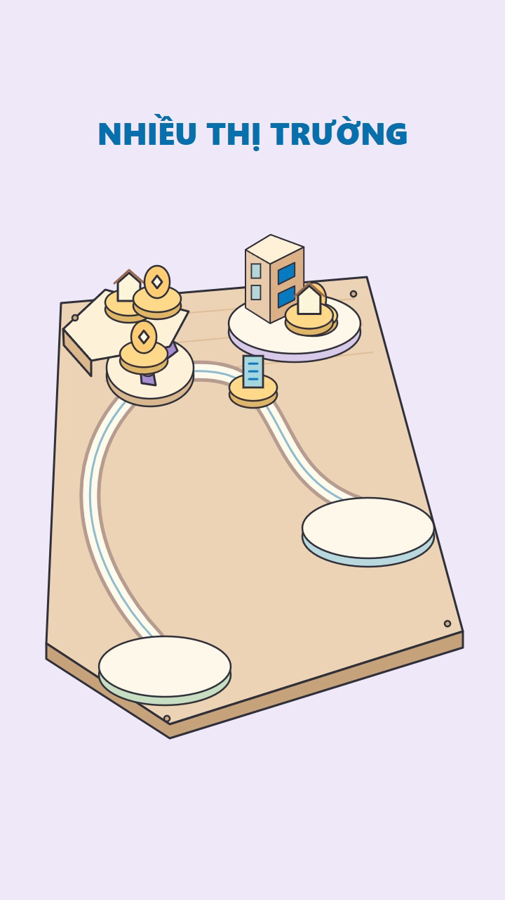
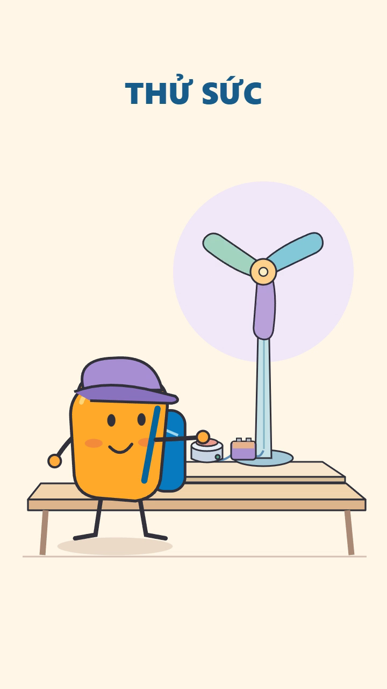
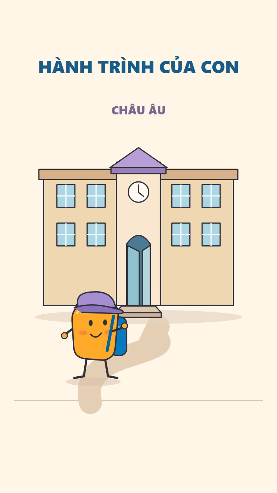
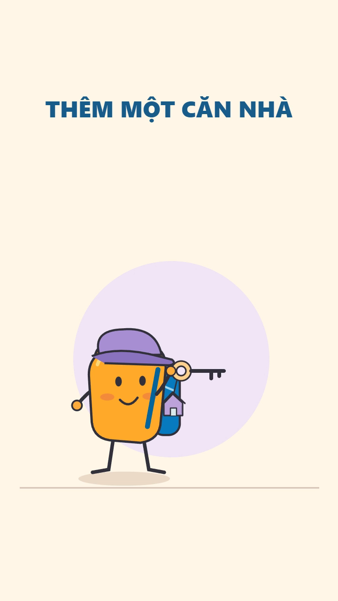
Kiểm tra kỹ thuật hoàn tất:
- Canvas & Framerate: 720×1280 @ 30.00 fps, đúng 2,255 frames.
- Picture Grid: Khớp chính xác từng frame giữa bản Clean và Master.
- Voice Muxing: Source WAV nguyên bản (1,803,840 samples, 24,000 Hz mono). Hệ số tương quan chéo đạt 0.999958, không nén hay thay đổi âm lượng.
- Subtitle Reserve: Vùng chân 180–200px (y=1080–1280) để trống phục vụ phụ đề.
- Bảo toàn master cũ: Cả 2 file master cũ trong
build/renders/giữ nguyên hash 100%.
• VIDEO-33-master-approved-r1.mp4:
abdc318b50b0f05eb7e1ae681f41e62150ff1c1f12eb807f137a32f9cd30da7a
• VIDEO-33-clean-approved-r1.mp4:
c3b2c50d8e6b87cdd9d789c54ba65992a38ed5b1b608a544a4f45362520ad949
• Source Audio (inputs/source_audio.wav):
cbd5a88b99c252d09ea86493377951aed1267186a5cb9ff11afe00947133e941
• Old Master (build/renders/VIDEO-33-master.mp4 - PRESERVED):
6f51c8368997f7e2d3721888c3a3d471c2407e8718248fc9d3bea6e4b2b87c50